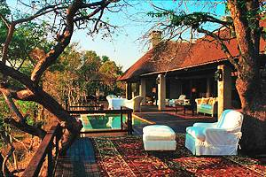
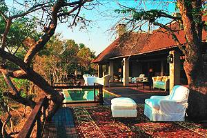

This popular driving route passes through rolling green hills, pretty coastal towns, lagoons, lakes, and coastal cliffs. Highlights of the route include the charming town of Knysna snuggled between dense forests and a sparkling lagoon; the beautiful Garden Route National Park with its gorges, tidal pools, and thick forests; Oudtshoorn's ostrich farms and Cango Caves; and the seal colony of the Robberg Nature Reserve in Plettenberg Bay. Adventures along the way run the
Johannesburg, also known as Jo'burg, is the largest city in South Africa by population and a gateway for many travelers on safari. Named the "City of Gold" for its rich deposits of the precious metal, it's also the economic engine and vibrant heart of the country. Top historical attractions include the Apartheid Museum, a poignant look at the oppression of apartheid to the birth of democracy; Constitution Hill; and Gold Reef City, which traces the region's history through mining-themed attractions. If Johannesburg is the heart of South Africa, the shanty towns of Soweto, are its soul.
 
Home

Home